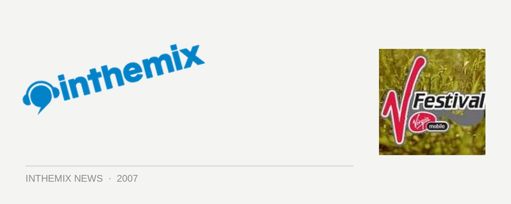

V Festival set times
As the inaugural event draws closer, set times have been released to help you plan out your day. Check them out to see when your favourite artists will be playing!
Promoter Michael Coppel claims a lot of effort has been into scheduling the playing times. “We’ve tried to limit the number of overlaps to ensure fans can see as many and as much of their favourite performers as possible.” We’ll let you decide for yourself whether he’s done a good job or not…
Click HERE to buy tickets to the V Festival.
THIS STAGE
1:00 – 1:30 Mercy Arms
2:00 – 2:45 Softlightes
3:15 – 4:00 Phoenix
4:30 – 5:15 New York Dolls
5:45 – 6:45 Jarvis Cocker
7:15 – 8:30 Beck
9:00 – 10:15 Pixies
THAT STAGE
12:45 – 1:15 The Seabellies (Garage to V)
1:45 – 2:15 Temper Trap
2:45 – 3:30 Bumblebeez
4:00 – 4:45 Nouvelle Vague
5:15 – 6:15 Gnarls Barkley
6:45 – 8:00 Groove Armada
8:30 – 9:45 Pet Shop Boys
OTHER STAGE
2:15 – 2:45 The Ghosts
3:15 – 3:45 The Valentinos
4:15 – 5:00 New Young Pony Club
5:30 – 6:30 The Rapture
7:00 – 8:00 Soulwax Niteversions
8:30 – 9:45 2manyDJs
VIRGIN MOBILE VENUE
1:00 – 2:30 Modular DJs
2:30 – 4:30 Andee Frost
4:30 – 6:45 Rub n Tug
6:45 – 7:30 Bang Gang
7:30 – 9:00 Gildas & Masaya (Kitsune’ DJs)
9:00 – 10:00 Bang Gang